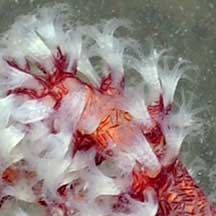
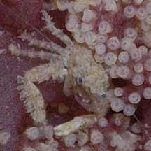

|
|
| soft corals text index | photo index |
| Phylum Cnidaria > Class Anthozoa > Subclass Alcyonaria/Octocorallia > Order Alcyonacea > Family Nephtheidea |
| Pink
flowery soft coral Dendronephthya sp.* Family Nephtheidae updated Nov 2019 Where seen? This bright pink flowery soft coral is seen on our Northern shores. Attached to coral rubble, boulders or other hard surfaces. Features: Colony tree-like about 10-15cm. Colony is branched with sturdy 'stems' emerging from a stout central 'trunk'. The 'stem' white or transparent, with red or pink sclerites embedded in the tissues. Polyps tiny (about 0.5cm) with eight white branched tentacles. The polyps appear in clusters at the tips of the branches, no obvious large spikes next to the polyps. Tends to be pinkish at the polyp clusters. The animals do not have symbiotic algae (zooxanthellae) and thus can be found in murky water and dark places. Flowery friends: Tiny animals found on the soft coral include tiny false cowrie snails, tiny porcelain crabs and tiny colourful brittle stars. |
 Beting Bronok, Jul 08 |
 |
 Beting Bronok, Jun 06 |
|
 Tiny porcelain crab. Beting Bronok, Jun 06 |

*ID awaits confirmation. Species are difficult to positively identify without closer examination.
On this website, the animals are grouped by external features for convenience of display.
| Pink flowery soft corals on Singapore shores |
On wildsingapore
flickr
|
|
Links
References
|